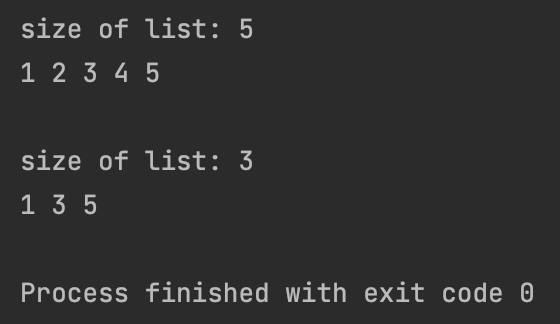

<meta charset="utf-8">
<html lang="ko">
<head>
    <link rel="stylesheet" type="text/css" href="./../style.css" />
    <title>Chap 05. 양 방향 연결 리스트</title>
</head>
<body id="tt-body-page" class="">
<div id="wrap" class="wrap-right">
    <div id="container">
        <main class="main ">
            <div class="area-main">
                <div class="area-view">
                    <div class="article-header">
                        <div class="inner-article-header">
                            <div class="box-meta">
                                <h2 class="title-article">Chap 05. 양 방향 연결 리스트</h2>
                                <div class="box-info">
                                    <p class="category">윤성우의 열혈 자료구조</p>
                                    <p class="date">2022-04-07 17:59:21</p>
                                </div>
                            </div>
                        </div>
                    </div>
                    <hr>
                    <div class="article-view">
                        <div class="contents_style">
                            <p data-ke-size="size16"><b>양 방향 연결 리스트 (doubly linked list)</b>는 각 노드가 다음 노드와 이전 노드를 모두 가르킨다.&nbsp;</p>
<p data-ke-size="size16">따라서 원형 연결 리스트에서 노드의 삭제에 필요했던 before 포인터가 불필요해진다.&nbsp;</p>
<p data-ke-size="size16">(원형 연결 리스트에서 before 포인터는, 원형 연결 리스트가 한쪽 방향으로만 조회가능 하기 때문에 존재해야 했던 포인터다)</p>
<p data-ke-size="size16">&nbsp;</p>
<p data-ke-size="size16">&nbsp;</p>
<h2 data-ke-size="size26"><b>양방향 연결 리스트의 노드의 삽입 </b></h2>
<p data-ke-size="size16"><b></b>head에 삽입 하는 경우 두 가지 경우가 있다.<b></b></p>
<p data-ke-size="size16"><br /><b>1. 첫 번째 노드 삽입하는 경우&nbsp;</b></p>
<p data-ke-size="size16">이 경우에는 현재 리스트에 아무런 노드도 없으므로 새로 삽입되는 노드의 next와 prev가 NULL을 가르키게 하고, head 포인터가 새로운 노드를 가르키도록 하면 된다.</p>
<p data-ke-size="size16">&nbsp;</p>
<p data-ke-size="size16"><b>2. 두 번째 이후 노드 삽입하는 경우&nbsp;</b></p>
<p data-ke-size="size16">이 경우에는 새 노드가 head가 가르키는 첫 번째 노드를 가르키도록 하고, head가 가르키는 첫 번째 노드는 새 노드를 가르키도록 해야 한다. 즉 head가 가르키는 첫 번째 노드와 새로 삽입되는 노드가 서로를 가르키도록 한다.&nbsp;</p>
<p data-ke-size="size16">이렇게 하고 나면 head 포인터가 기존에 존재하던 노드를 가르키고 있는 상태이므로 head 포인터가 새 노드를 가르키도록 해야한다.&nbsp;</p>
<p data-ke-size="size16">&nbsp;</p>
<p data-ke-size="size16">&nbsp;</p>
<h2 data-ke-size="size26"><b>양방향 연결 리스트의 데이터 조회</b></h2>
<p data-ke-size="size16">양방향 연결 리스트에서 데이터의 <b>조회는 단방향 연결 리스트보다 쉽게 진행</b>된다.</p>
<p data-ke-size="size16">단방향 연결 리스트에서는 데이터를 삭제할때, 데이터가 삭제되고 cur 포인터 변수가 한칸 이전으로 되돌아 가기위해&nbsp; before 포인터 변수가 필요했다. 하지만 양방향 연결 리스트는 삭제되는 노드가 이전 노드를 가르키는 prev 포인터 변수가 있기 때문에 <b>before 포인터 변수가 필요없다.&nbsp;</b></p>
<p data-ke-size="size16">&nbsp;</p>
<p data-ke-size="size16">그외에는 동일하게 삭제되는 노드의 이전 노드가 삭제되는 노드의 다음 노드를 가르키고,&nbsp;</p>
<p data-ke-size="size16">마찬가지로 삭제되는 노드의 다음 노드가 삭제되는 노드의 이전 노드를 가르키도록 하고 삭제되는 노드의 메모리를 해제 해주는 방식으로 진행된다.&nbsp;</p>
<p data-ke-size="size16">&nbsp;</p>
<hr contenteditable="false" data-ke-type="horizontalRule" data-ke-style="style3" />
<h2 data-ke-size="size26"><b>문제 05-2 [더미 노드 기반의 양방향 연결 리스트의 구현]</b></h2>
<p data-ke-size="size16">헤드와 테일에 더미 노드를 갖는 양방향 연결 리스트.</p>
<p data-ke-size="size16">구현하면서 생각해본 헤드와 테일에 각각 더미 노드가 있는 이유는 첫번째 노드의 삽입과 그 이후의 노드의 삽입이 동일하게 진행할수 있도록 하기위함 인 것 같다. 최초에 리스트를 초기화할때 헤드의 더미는 테일의 더미를, 테일의 더미는 헤드의 더미를 가르키게 하면, 이후 첫 번째 노드가 삽입될때 새로운 노드의 prev 포인터가 그냥 tail이 가르키는 노드의 prev가 가르키는 노드를 가르키도록 하면 그것이 head가 가르키는 더미 노드일것이다.</p>
<p data-ke-size="size16">&nbsp;</p>
<p data-ke-size="size16"><b>DummyDoublyLinkedList.h</b></p>
<pre class="cpp"><code>/*
 * 헤드와 테일에 더미노드가 있는 양방향 연결 리스트 (Doubly Linked List)
 */

#ifndef CHAP05_DUMMYDOUBLYLINKEDLIST_DUMMYDOUBLYLINKEDLIST_H
#define CHAP05_DUMMYDOUBLYLINKEDLIST_DUMMYDOUBLYLINKEDLIST_H

#define FALSE 0
#define TRUE 1

typedef int Data;

typedef struct _node
{
    Data data;
    struct _node *next;
    struct _node *prev;
} Node;

typedef struct _dbDLinkedList
{
    Node *head;
    Node *tail;
    Node *cur;
    int numOfData;
} DBLinkedList;

typedef DBLinkedList List;

void ListInit(List *plist);
void LInsert(List *plist, Data data); // 새 노드를 꼬리에 추가함

int LFirst(List *plist, Data *pdata);
int LNext(List *plist, Data *pdata);

Data LRemove(List *plist);
int LCount(List *plist);

#endif //CHAP05_DUMMYDOUBLYLINKEDLIST_DUMMYDOUBLYLINKEDLIST_H
</code></pre>
<p data-ke-size="size16"><b>DummyDoublyLinkedList.c</b></p>
<pre class="xl"><code>#include "DummyDoublyLinkedList.h"
#include &lt;stdlib.h&gt;

void ListInit(List *plist)
{
    // dummy node
    plist-&gt;head = (Node*)malloc(sizeof(Node));
    plist-&gt;tail = (Node*)malloc(sizeof(Node));
    // head는 tail을, tail은 head를 가르킨다
    plist-&gt;head-&gt;next = plist-&gt;tail;
    plist-&gt;tail-&gt;prev = plist-&gt;head;
    plist-&gt;head-&gt;prev = NULL;
    plist-&gt;tail-&gt;next = NULL;

    plist-&gt;cur = NULL;
    plist-&gt;numOfData = 0;
}
// 새 노드 꼬리에 추가
void LInsert(List *plist, Data data)
{
    Node *newNode = (Node*)malloc(sizeof(Node));
    newNode-&gt;data = data;

    newNode-&gt;next = plist-&gt;tail;
    newNode-&gt;prev = plist-&gt;tail-&gt;prev;
    plist-&gt;tail-&gt;prev-&gt;next = newNode;
    plist-&gt;tail-&gt;prev = newNode;
    (plist-&gt;numOfData)++;
}

int LFirst(List *plist, Data *pdata)
{
    if(plist-&gt;tail-&gt;prev == NULL)
        return FALSE;

    plist-&gt;cur = plist-&gt;head-&gt;next;

    *pdata = plist-&gt;cur-&gt;data;
    return TRUE;
}

int LNext(List *plist, Data *pdata)
{
    if(plist-&gt;cur-&gt;next == plist-&gt;tail) return FALSE;

    plist-&gt;cur = plist-&gt;cur-&gt;next;
    *pdata = plist-&gt;cur-&gt;data;
    return TRUE;
}

Data LRemove(List *plist)
{
    // 지울 노드와 데이터
    Node *rpos = plist-&gt;cur;
    Data rdata = rpos-&gt;data;

    plist-&gt;cur-&gt;prev-&gt;next = plist-&gt;cur-&gt;next;
    plist-&gt;cur-&gt;next-&gt;prev = plist-&gt;cur-&gt;prev;
    plist-&gt;cur = plist-&gt;cur-&gt;prev;

    free(rpos);
    (plist-&gt;numOfData)--;
    return rdata;
}

int LCount(List *plist)
{
    return plist-&gt;numOfData;
}
</code></pre>
<p data-ke-size="size16"><b>main.c</b></p>
<pre class="reasonml"><code>#include &lt;stdio.h&gt;
#include "DummyDoublyLinkedList.h"

int main()
{
    List list;
    ListInit(&amp;list);

    LInsert(&amp;list, 1);
    LInsert(&amp;list, 2);
    LInsert(&amp;list, 3);
    LInsert(&amp;list, 4);
    LInsert(&amp;list, 5);

    Data data;
    // data 조회
    printf("size of list: %d\n", LCount(&amp;list));
    if(LFirst(&amp;list, &amp;data))
    {
        printf("%d ", data);

        while(LNext(&amp;list, &amp;data))
            printf("%d ", data);
        printf("\n");
    }

    // 2의 배수 리스트에서 삭제
    if(LFirst(&amp;list, &amp;data))
    {
        if(data % 2 == 0) LRemove(&amp;list);
        while(LNext(&amp;list, &amp;data))
            if(data % 2 == 0) LRemove(&amp;list);
    } printf("\n");

    // data 조회
    printf("size of list: %d\n", LCount(&amp;list));
    if(LFirst(&amp;list, &amp;data))
    {
        printf("%d ", data);

        while(LNext(&amp;list, &amp;data))
            printf("%d ", data);
        printf("\n");
    }
}
</code></pre>
<p data-ke-size="size16">&nbsp;</p>
<p data-ke-size="size16"><b>결과&nbsp;</b></p>
<p><figure class="imageblock alignLeft" >
    <span data-lightbox="lightbox">
        
    </span>
    <figcaption></figcaption>
</figure></p>
<p data-ke-size="size16">&nbsp;</p>
<p data-ke-size="size16">&nbsp;</p>
<p data-ke-size="size16">&nbsp;</p>
                        </div>
                        <br/>
                        <div class="tags">
                            #C #doubly linked list #양방향 연결 리스트 
                        </div>
                    </div>
                </div>
            </div>
        </main>
    </div>
</div>
</body>
</html>
